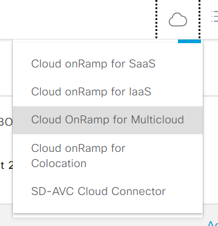

Task 2
Task 2: Review Viptela SD-WAN API documentation
https://developer.cisco.com/docs/sdwan/
Most of the APIs used in this document in the 'multicloud' section. Before we can leverage ANY of the APIs we need to dig into the authentication section of the API documentation. This was covered in Section 1, so let’s discuss the APIs used in Section 2.
REMINDER:
Every data service API request begins with the following Base URI: https://<vmanage-server>/dataservice
We’ll be performing several POST operations using the following APIs:
/multicloud/accounts
/multicloud/settings/global
/multicloud/hostvpc/tags
/multicloud/cloudgateway
/multicloud/map
Understand the Cloud OnRamp for Multicloud Process
A. Associate Cloud account (see variable file that you’ve updated)
B. Cloud Global Settings
C. Create cloud gateway
D. Manage intent (via segmentation policies)
*** DON’T Configure any of the steps listed in this section, this is for informational purposes only ***
Associate Cloud Account
(Don’t configure this via the GUI, just showing it for visibility)



You can see here that the /Multicloud/accounts API is used to associate the cloud account. You can create and manage cloud accounts and configure global settings in Cisco vManage for AWS automation. You can create multiple accounts, pick a specific account for transit gateway, mark one or more accounts for transit VPC automation and use other accounts for host VPC discovery and connectivity.
The multicloud dashboard supports AWS key and IAM role models for authentication. IAM roles only work for AWS cloud deployed Cisco vManage, as this requires special AWS AssumeRole functions. The cloudGatewayEnabled variable enables the account to deploy the cloud gateway solution (C8000v in the transit VPC + TGW).
Cloud Global Settings
From the SD-WAN API documentation
Global settings enable you to set a configuration one time and repeat across regions and handle resource management globally (per cloud). The software image and instance size specified are used for instantiation of CSRs in the cloud as part of the cloud gateway.
Global settings include:
Software image: CSR software image used for creating cloud gateway. There are two available software types: BYOL (Bring your own license) or PAYG (Pay as you go). In today’s lab we’ll be using a BYOL image. Specifically, 17.09.02a will be the software image used.
AWS Instance Size: CSR instance size used depending upon bandwidth requirements.
Cloud Gateway Solution: The gateway solution used for AWS cloud. For example, transit gateway with transit VPC.
IP subnet pool: IP subnet pool used for transit VPC creation across regions. Subnet pool can be customized per cloud gateway using custom settings option, if desired.
Intra-Tag Communication: Allows or denies communication between the VPCs under the same tag.
Default Route in Host VPCs: Default routes are automatically added to the main route table of the VPC that points to the transit gateway.
Full Mesh of Transit VPCs: Setup a full mesh connectivity between TVPCs of cloud gateways in different regions so as to carry site to site traffic (through CSRs) over public cloud backbone.
Site-to-Site Tunnel Encapsulation Type: The two options are GRE or IPsec

Note: The above image depicts the Transit Gateway – VPN based (using TVPC) against Transit Gateway – Connect Based (using TVPC) options.
What’s the difference? One has IPsec and one has GRE? As mentioned in the image above, the connect option is the latest capability available (~2 years old). The choice for IPSec or GRE tunnels depends on customer requirements such as required bandwidth, security, use of public or private IP addresses for the tunnel endpoints. Regardless, both options allow the SD-WAN to be extended into the transit VPC.

Note: As you can see in the screenshot from the API documentation above, the softwareImageId is 17.05.01a-[product ID]. We’ll use ‘Cisco-C8K-17.09.02a-42cb6e93-8d9d-490b-a73c-e3e56077ffd1’ in our request. Why? AMI version cannot exceed the vManage version. Since we’re running 20.9 version of vManage in today’s lab, we’re going to use the 17.09.02a version.
For today’s lab, we’ll also be using the Transit Gateway – VPN based (using TVPC) cloud gateway solution.
Create cloud gateway
AKA, where the magic happens! This is the step where the TGW & Transit VPC (C8000v devices) are deployed! What do we need to do in preparation for this step?
1. Log into your AWS console
2. Go to the AWS Marketplace
3. Search for ‘8000v’

4. In this lab setup this has already been performed, but a new deployment would require subscribing.
(Don’t configure this via the GUI, just showing it for visibility)
Note: Take note that running EC2/infrastructure cost of running the VMs are NOT free. Also, the costs differ depending on the selected region. Select US West and then US East to compare the pricing differences.
5. Validate permissions-In this lab setup this won’t be an issue, but normal local administrator rights are insufficient. We specifically need the AmazonEC2FullAccess & AmazonVPCFullAccess permissions associated with the account you supplied for the automation deployment to be successful. This is configured within the Identity & Access Management (IAM) dashboard to manage access to AWS resources.
Note: This is a user group called Admins that we’ve associated the privileges to. You may not have access to IAM as part of this lab but see the above image for demonstration purposes. Reminder, this is not necessarily a best practice, and you should be following a practice of least privilege and it is common to associate an account specifically for AWS<>vManage interconnect.
(Don’t configure this via the GUI, just showing it for visibility)

Reviewing the screenshot above, we’re going to ignore the settings section as these configurations are already present in our global config. This settings section is meant to override the global settings, should that be required.
There is a field that we must populate, the UUID section, which will specify WHICH virtual devices we intent to deploy.
(Don’t configure this via the GUI, just showing it for visibility)
6. Navigate to Configuration>Devices
7. You can see a number of devices with ‘Chassis Number’ in the first column-these are the UUIDs. Copy/paste two UUIDs into your notepad for the deployment section.
Note: Do NOT use the UUID associated with the existing border router.
8. Navigate to Configuration>Templates
(Don’t configure this via the GUI, just showing it for visibility)

9. Navigate to “Device Templates” and take note of the “AWS-cat8kv-multicloud” template. A normal practice would be to click ‘attach devices’-we’re going to use Ansible for this.
(Don’t configure this via the GUI, just showing it for visibility)

10. This template will attach when the device comes online (when we configure the step within the OnRamp for Multicloud Create Cloud Gateway step)
Manage intent (via segmentation policies)
What? If I keep saying ‘This is where the magic happens’ .. This is where MORE magic happens! This is where we specifically define which SD-WAN VPNs can reach which AWS VPCs! Also, we can specify which VPC to VPC traffic we wish to permit.

Within the GUI, this is a lot prettier and easier to understand.

Note: Here you can see that VPN65530 can access the 5StarLab VPC & VPN10 can access the test VPC (bidirectionally). VPN 10 CANNOT access the 5StarLab VPC.
Now that we understand the steps, reviewed what variables are needed, and have prepared our AWS environment, we’re ready to get into Ansible!